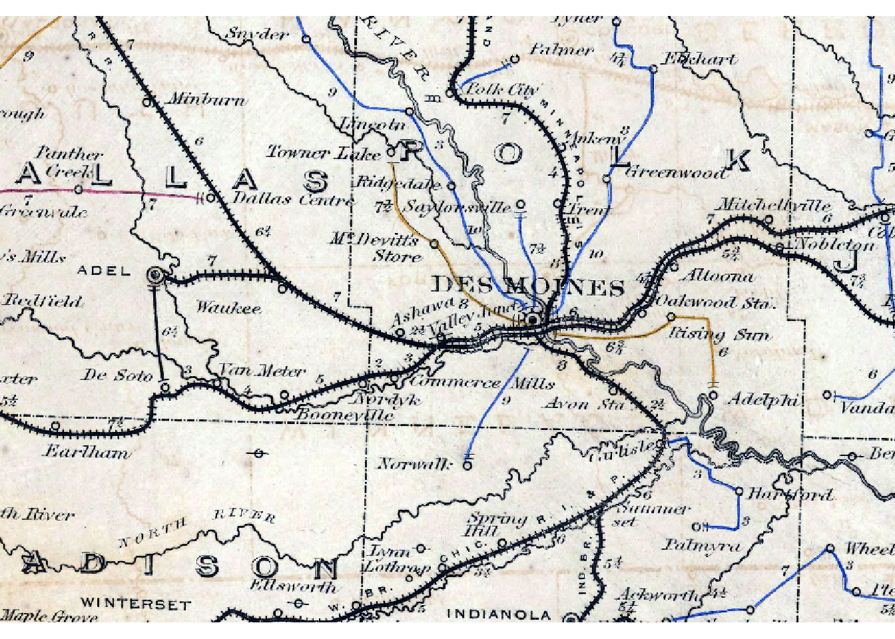
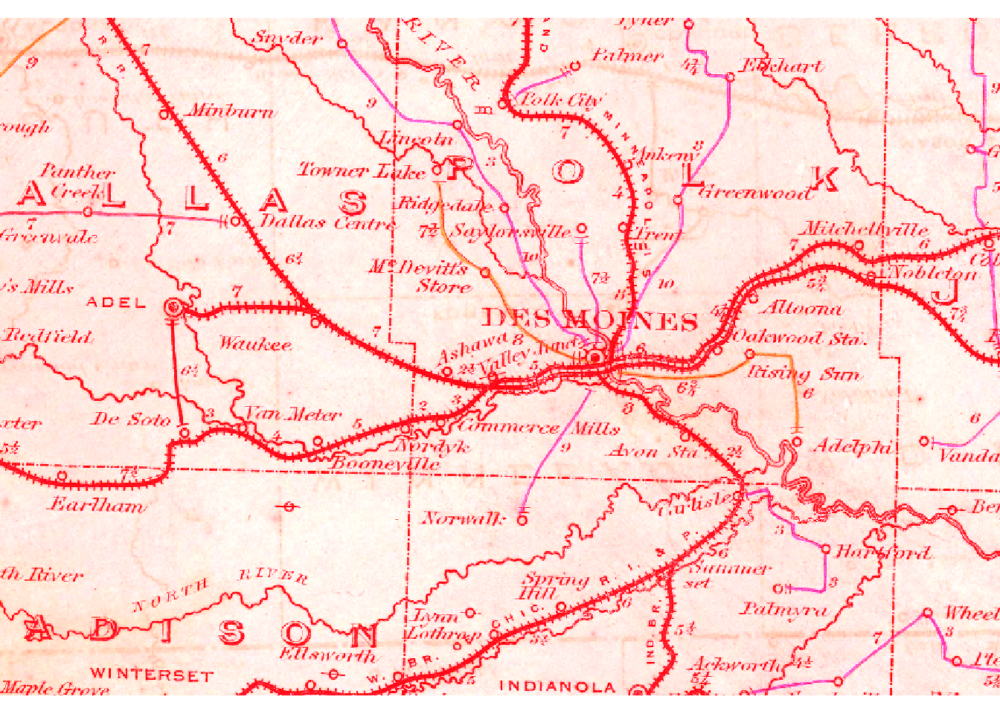
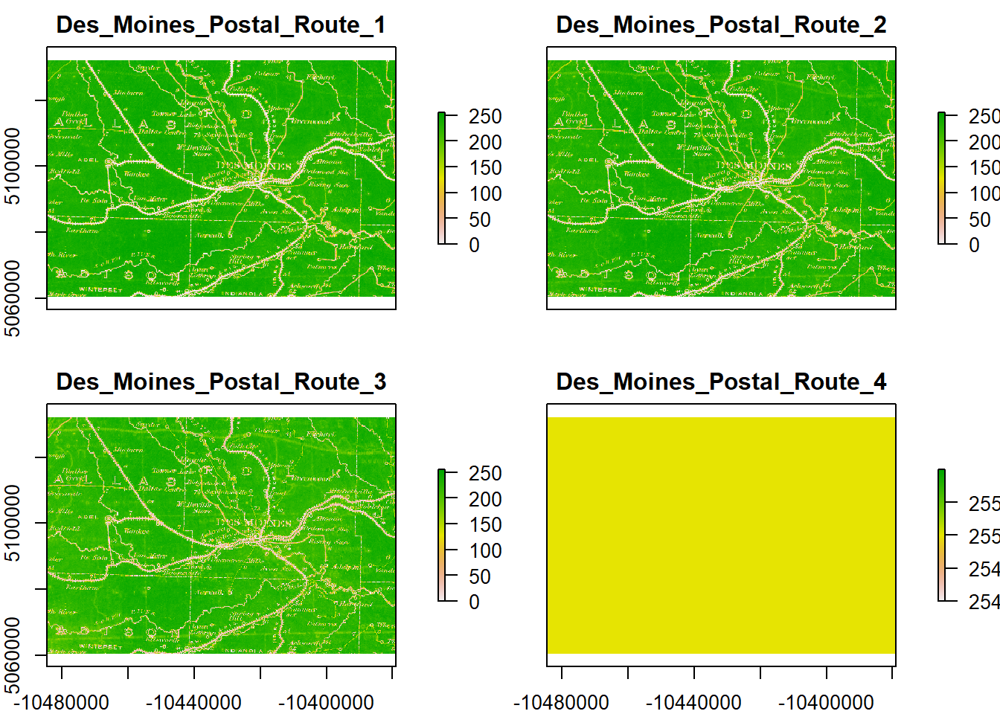
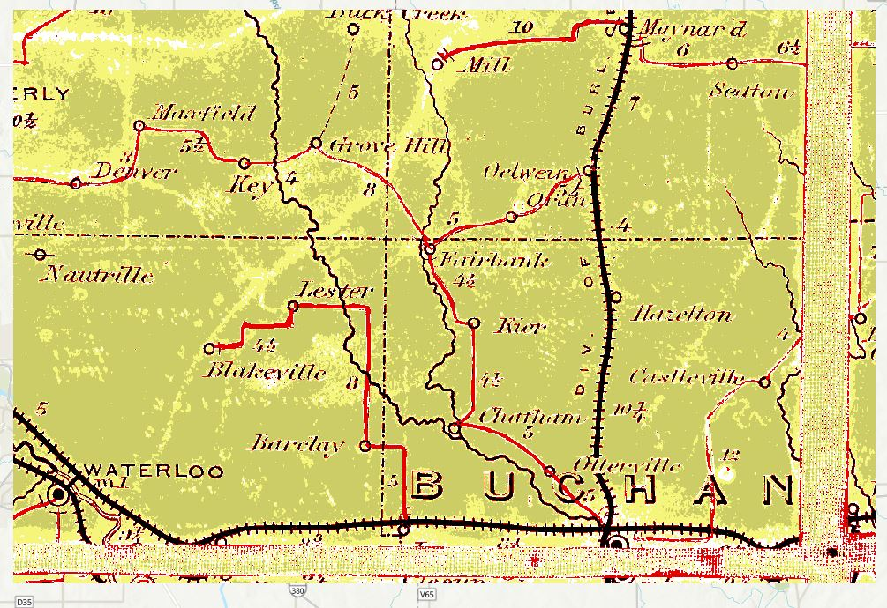

library(sf)
library(aRcGeo)
library(raster)In this entry, I want to showcase some of the opportunities that exist with working on scanned historical maps using some image processing and GIS tools. The scanned map that I will be working on is a section of the Postal Route Map of the United States. The map is titled Upper Part. Post Route Map of States of Illinois, Iowa and Missouri and dated to 1879. I’ve downloaded a georeferenced copy of this map through the David Rumsey Map Collection at Stanford. I have yet to find the complete map of the Post Routes but other portions of it can also be found in the Library of Congress.
Loading Libraries
Until I figure out how to share the actual clipped imagery files on the blog page, I’ll just assume the reader will want to see the code rather than execute it. Nevertheless, if you have raster images that you replace the paths for, all of the functionality should operate just fine. I am currently working to solve the dependencies of the aRcGeo package if you have access to ArcGIS Pro and also installed arcgisbinding to follow along.
Setting Paths to Raster Files
In order for the tests to run quicker, I’ve clipped two sections of the Upper Postal Routes Map to conduct our spatial analysis on. One of them surrounds the Des Moines area and the other in Buchanan, Iowa. I chose these two locations because together they contain most of the unique cartographic objects that exists throughout the complete map.
We’ll start by creating a path to these files so that we can use them for conversion later. The file format that I downloaded the images in are .tif files.
trim_path <- file.path("..", "GIS_DATA", "Maps", "Trims")
Des_Moines_Postal_Route_tif <- file.path(trim_path, "Des_Moines_Postal_Route.tif")
Buchanan_Postal_Route_tif <- file.path(trim_path, "Postal_Routes_Selection.tif")Load Des Moines Postal Route Raster Image
Our Des Moines Postal Route Raster is composed of 4 bands. Here we can assume that we are getting the Red, Green, and Blue color bands as well as an additional band we can use as Near Infrared.
DMoines_Raster <- brick(Des_Moines_Postal_Route_tif)
# Display Raster Information
DMoines_Rasterclass : RasterBrick
dimensions : 1984, 2928, 5809152, 4 (nrow, ncol, ncell, nlayers)
resolution : 36.04464, 36.04464 (x, y)
extent : -10484535, -10378996, 5060635, 5132148 (xmin, xmax, ymin, ymax)
crs : +proj=merc +a=6378137 +b=6378137 +lat_ts=0 +lon_0=0 +x_0=0 +y_0=0 +k=1 +units=m +nadgrids=@null +wktext +no_defs
source : Des_Moines_Postal_Route.tif
names : Des_Moines_Postal_Route_1, Des_Moines_Postal_Route_2, Des_Moines_Postal_Route_3, Des_Moines_Postal_Route_4
min values : 0, 0, 0, 0
max values : 255, 255, 255, 255 Load Buchanan Postal Route Raster Image
Since the images are from the same raster, this clip also has the same number of bands.
Buchanan_Raster <- brick(Buchanan_Postal_Route_tif)
# Display Buchanan Raster Information
Buchanan_Rasterclass : RasterBrick
dimensions : 1412, 2120, 2993440, 4 (nrow, ncol, ncell, nlayers)
resolution : 36.04464, 36.04464 (x, y)
extent : -10284415, -10208000, 5222656, 5273551 (xmin, xmax, ymin, ymax)
crs : +proj=merc +a=6378137 +b=6378137 +lat_ts=0 +lon_0=0 +x_0=0 +y_0=0 +k=1 +units=m +nadgrids=@null +wktext +no_defs
source : Postal_Routes_Selection.tif
names : Postal_Routes_Selection_1, Postal_Routes_Selection_2, Postal_Routes_Selection_3, Postal_Routes_Selection_4
min values : 31, 13, 0, 255
max values : 255, 242, 234, 255 Displaying the Maps
We can take a quick look at an RGB render of the rasters with Natural Color, giving us the color scheme we are used to seeing the maps with our eyes.
plotRGB(DMoines_Raster)
If we wanted the image in a rearranged RGB render, like Color Infrared, we would replace the order of our bands. In the case of Color Infrared, the first red band would be replaced with band 4 to get the following result.
plotRGB(DMoines_Raster, r=4)
The plot function will show us all of the bands individually though the way this is represented by default is a little unintuitive because of the way the color schemes work. We can read these plots as, _1 represents the Red band, _2 the Blue, and so on.
plot(DMoines_Raster)
Preparing Images for Processing
To make our classification more successful, let’s look to see the kinds of problems we might be facing without any pre-processing on our image.
plotRGB(Buchanan_Raster)
We want to use an ISO Clustering Unsupervised model for classification. At a simplified level, we are going to tell the the machine to look at pixels across this image and classify an x number of objects to digitize as it does so. What we are hoping for is that the classification will extract the same number of classes that we see as features on the map.
Based on the complete elements of this particular map, we have 14 unique classes that we would like to identify.
The first two of these classes are information about the “empty” map spaces. It’s important to try and identify these areas clearly so that we can understand how well the clustering works in separating the features we want from these two classes. These are…
- Map Background
- Map Stitching
The remaining classes are the more intuitive features we would like to classify.
- Map Element Titles (i.e. for cities, the map, or numerical values)
- Circles indicating City Locations
- Rail Tracks
- Postal Route (Yellow)
- Postal Route (Blue)
- Postal Route (Red)
- Rivers (thicker)
- Rivers (thinner)
- Water bodies
- Map Borders
- County Borders
- State Borders
Let’s run the classification to see what happens.
Running First Set of Classifications
First we will need to initialize the connection to ArcGIS Pro and load the arcpy module. We also need to check out the Spatial Analyst extension.
aRcGeo::init_arcpy(conda_env = "arcgispro-py3-DeepLearning")
arcpy$CheckExtension("Spatial")
arcpy$env$workspace = getwd()In the Buchanan example we don’t have all the 14 classification features we need but we can keep the number high and ask for 10 instead.
# Run Classification
Buchanan_Classified_10 <- arcpy$sa$IsoClusterUnsupervisedClassification(in_raster_bands = Buchanan_Postal_Route_tif, Number_of_classes = 10)Here’s our output in an ArcGIS screenshot.

Here’s our original for reference.
plotRGB(Buchanan_Raster)
As we can see, the output is extremely messy. The classifier has identified classes that we aren’t totally interested in. This is clear in the background areas of the map where certain blemishes get classified as different features. While that’s really cool, our intention is to actually classify the map background as a single feature.
We can try classification again with less features hoping to get a less muddy picture.
# Run Classification
Buchanan_Classified_5 <- arcpy$sa$IsoClusterUnsupervisedClassification(in_raster_bands = Buchanan_Postal_Route_tif, Number_of_classes = 5)Here’s our new classification with only 5 classes.

The results are significantly clearer and we can tell that the classifier did a good job of outlining the different rail lines and postal lines as well. We can also tell that the classifier also highlighted some background map features for us instead of differentiating between the different postal route colors.
This is not perfect, but we are definitely closer to the digitized output that we would like to reach. In the next blog, I will introduce some methods for how we can avoid classifying those background marks in the hopes of classifying the postal routes instead.
TO BE CONTINUED…